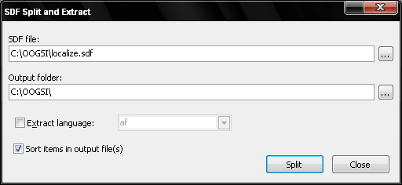

SDF Split and Extract
The SDF Split and Extract application is a utility program to extract single language files
from OpenOffice sdf and gsi files. The IniTranslator OOGSI plugin has very weak support for
multiple language files, so you can use this utility to create single language files that it
supports fully.
The original SDF/GSI file is not altered by this program.
The application looks like this:

-
SDF file
-
The multiple language file you want to extract single language files from. Click the browse
(...) button to select a file using the standard open dialog. The program supports SDF and
GSI files.
-
Output folder
-
Specify the name of the folder where you want the extracted files to be created. The
folder will be created automatically if it doesn't exist.
A sub folder for each extracted language will be created in the output folder and the
extracted file will be saved to this folder, using the same filename as the input SDF
file.
-
Extract language
-
If you only want to extract a specific language, activate this option and select a language
from the list. Note that even if a language is in the list, it is possible that it is not
in the sdf file. The content of the SDF file is not checked before the split, so there is
no way of knowing what languages it contains (if any). If you select a language that is not
in the SDF file, an empty language file is created as output.
-
Sort items in output file(s)
-
Specify whether items in the output file(s) should be sorted. This will take sligthly
longer to generate, but it will be easier to compare different language files against each
other using a diff tool.
Click on the Extract button to extract the language file(s) from the sdf
file. When the extraction is completed, the generated files are ready to be imported into
IniTranslator using the OOGSI plugin.